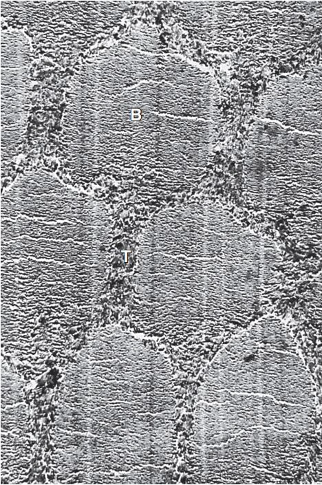

نسخه استخراجشده؛ ترجمه یا تأیید علمی انجام نشده است. وضعیت: captured

مینای دندان از میلیونها واحد ساختاری به نام منشور مینایی (Enamel Prisms / Rods) ساخته شده است. تصویر، مقطع عرضی این منشورها را زیر میکروسکوپ الکترونی نشون میده.
اجزای مشخص شده در تصویر:
حرف B (تنه/Body): نشاندهنده بخش مرکزی و اصلی منشور است. در این ناحیه، کریستالهای آپاتیت تقریباً موازی با محور طولی منشور قرار گرفتهاند.
حرف T (دم/Tail): نشاندهنده بخش باریکتر منشور است که بدنه (B) را احاطه کرده است. در این ناحیه، کریستالها با زاویهدار شدن مداوم (تا ۶۵ درجه) نسبت به محور منشور قرار میگیرند.
🔑 نکته کلینیکی : حساسیت کریستالها به اسید (پوسیدگی یا اتچینگ)، مستقیماً با جهتگیری آنها در بخشهای B و T مرتبط است.
منشور مینایی (Enamel Prisms / Rods) متراکمترین بافت معدنی بدن است. (96% ماده معدنی، 1% ماده آلی، 3% آب)
غلاف منشور (Rod Sheath): مرز بین منشورهاست که ماده آلی بیشتر و کریستالهای کمتری دارد. این غلاف، اولین مسیر نفوذ اسید به اعماق میناست.
مرز انحلال: هیدروکسی آپاتیت در برابر فلورآپاتیت
مینا در حالت عادی در تعادل با املاح کلسیم و فسفات بزاق قرار دارد. وقتی pH محیط افت میکند، بزاق از املاح غیراشباع شده و کریستالها حل میشوند.
🔑 مرزهای طلایی pH بحرانی:
مینای طبیعی (Hydroxyapatite - HA): pH بحرانی آن 5.5 است. در پایینتر از این مرز، انحلال کلسیم و فسفات آغاز میشود.
مینای فلورآپاتیت (Fluorapatite - FA): جانشینی یون فلوراید به جای هیدروکسید، کریستالها را پایدارتر میکند. pH بحرانی آن به 4.5 کاهش مییابد.
یک واحد حاشیه امن: حضور فلوراید باعث میشود مینا در برابر اسیدهای ضعیفتر (بین pH 4.5 تا 5.5) کاملاً مقاوم بماند.